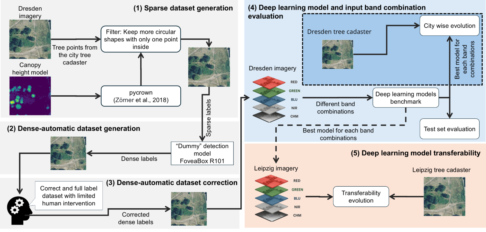
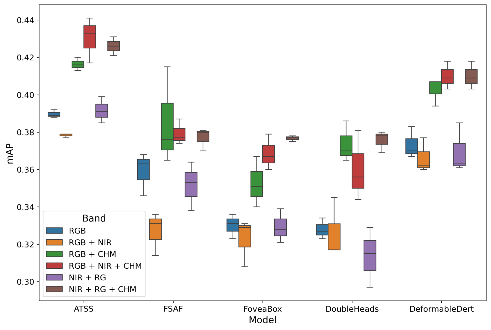
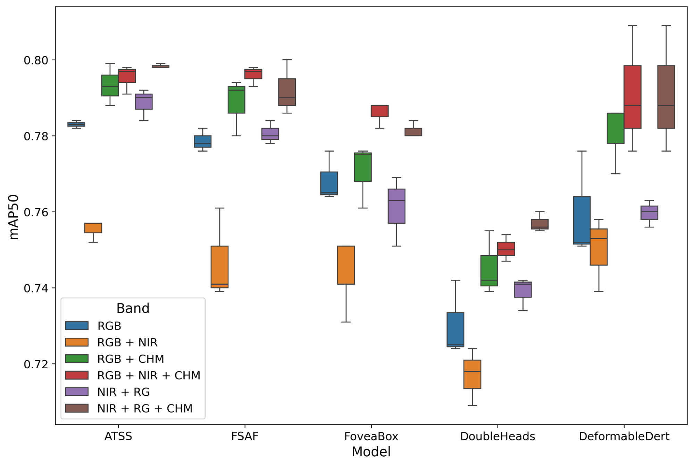
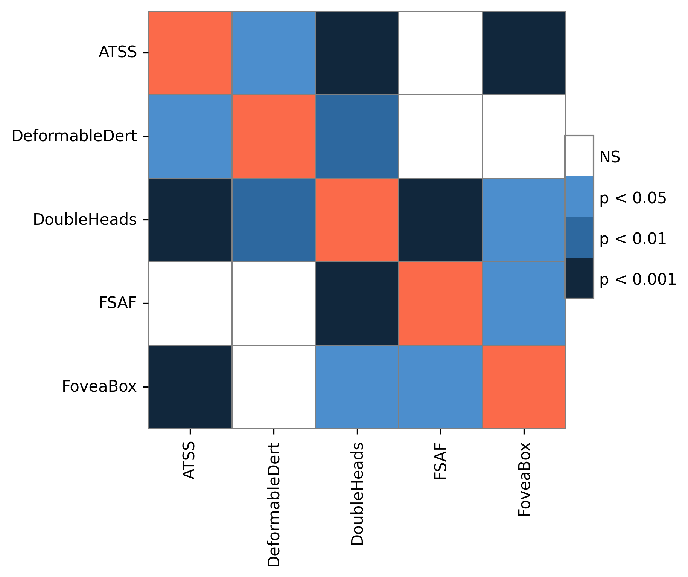
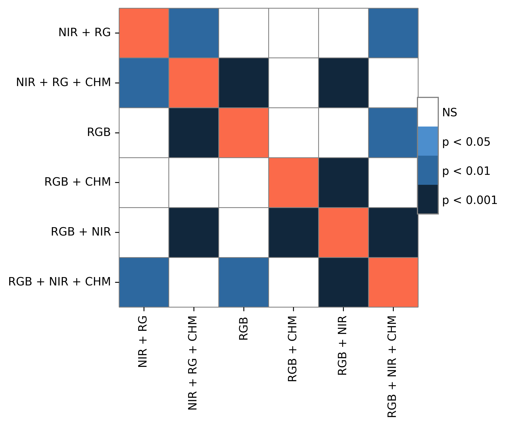
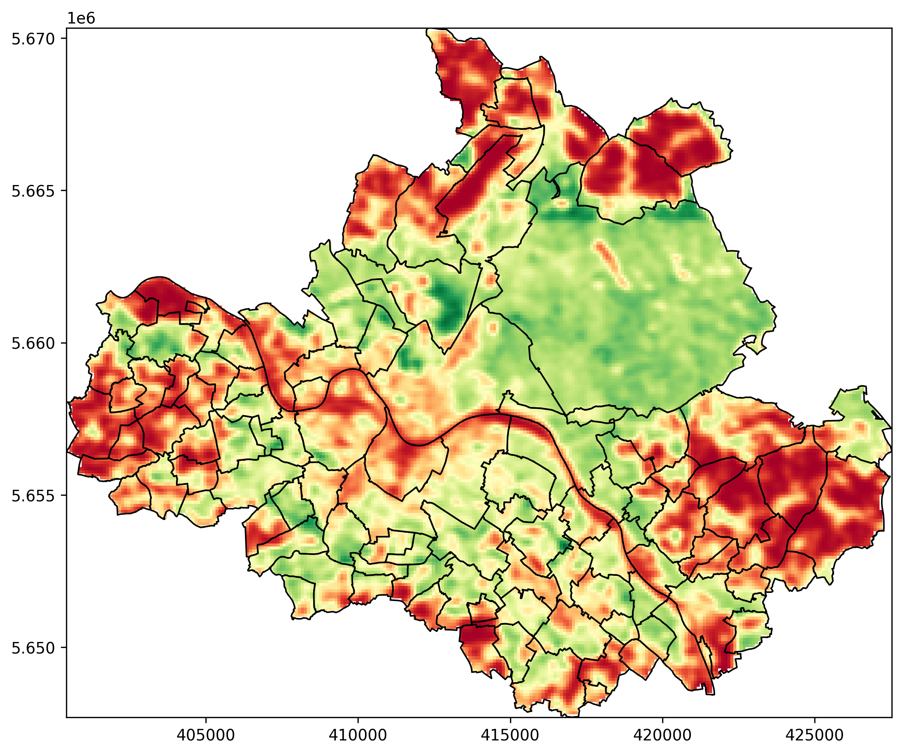
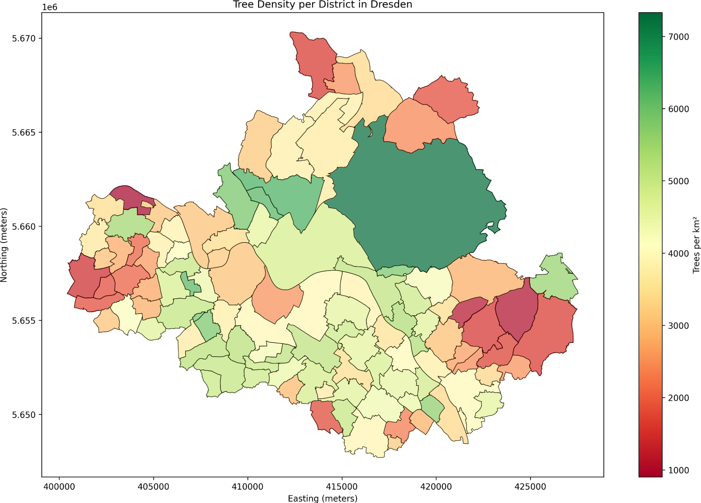
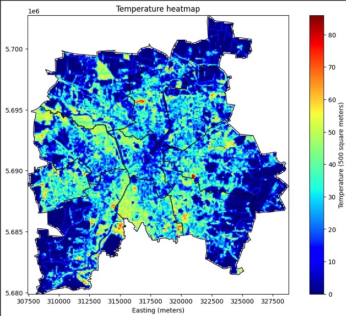
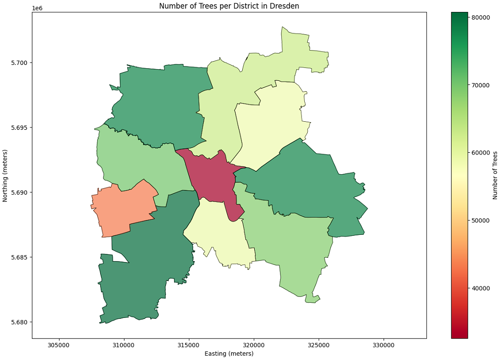

About
Urban tree inventories are essential for sustainable city planning, biodiversity conservation, and climate resilience. However, conventional tree cadaster mapping remains labor-intensive and spatially limited. In this study, we propose a novel semi-automatic pipeline that combines open-access urban tree inventories, LiDAR-derived canopy height models (CHMs), and multispectral aerial imagery to generate dense, high-quality labels for supervised deep learning models. Using data from Dresden, Germany, we first created a sparse training dataset with CHM-derived crowns filtered by official cadasters. A preliminary "dummy" model was then used to infer dense tree crowns, which were manually refined to produce a high-quality dense dataset. Five state-of-the-art object detection models—including anchor-free, anchor-based, and transformer-based architectures—were trained and evaluated across six input band combinations. The best models were applied to both Dresden and Leipzig, the latter serving as an independent test site to assess model generalizability. Results demonstrate that models trained with RGB, NIR, and CHM inputs achieved the highest accuracy (mAP50 > 0.79) and transferability, with anchor-free models like ATSS and FSAF outperforming others. This study bridges the gap between sparse and dense tree cadastres, providing an efficient, scalable framework for urban forestry mapping at city-wide scales.
Methodology

Methodology Overview
Initially, tree cadastres and the canopy height model (CHM) from the city of Dresden were utilized in conjunction with PyCrown (cite) to generate a sparse tree dataset. Subsequently, this dataset was employed to train a supervised deep learning model for tree detection, henceforth referred to as the Dummy model. The trained Dummy model was employed to perform inference across the entire Dresden dataset, generating a dense pseudo-label dataset. A limited human intervention was introduced to manually correct the model's predictions, resulting in a densely annotated tree dataset. This refined dataset constituted the basis for training five distinct object detection models. During this training phase, six different band combinations were evaluated as input to the models. Consequently, the model demonstrating the most favorable outcomes for each combination of bands was implemented to map individual tree crowns in both Dresden and Leipzig. Lastly, a comparative analysis was conducted between the resulting tree maps and the official tree cadastres for each city.
Initial Results
Deep learning model and input evaluation

mAP for all models using all six different band combinations.

mAP50 for all models using all six different band combinations.

mAP50 models statistical analysis.

mAP50 input band combination statistical analysis.
Dresden and Leipzig tree maps

Dresden tree heatmap. Around 1.2 millions trees in the city.

Trees per Dresden districts.

Leipzig tree heatmap. Around 900 thousand trees in the city.

Trees per Leipzig districts.